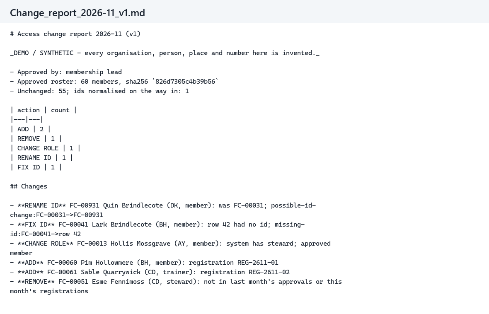

ReconcileHub
Monthly access-roster reconciliation that suggests near-matches and never merges two people on a guess.
15 automated tests. Video replayed from a real run (0.9 s).
Four maker spaces use key cards. Every month someone compares three lists: who the door system lets in, who was approved last month, and who signed up this month. Most people match exactly. But one person's card number changed, one row lost its number entirely, and one sign-up looks like an existing member typed differently. A careless matcher would merge people or lock someone out. ReconcileHub decides the exact matches itself, holds the uncertain ones with a suggestion, and only produces the list of changes for the door system once a person has decided each case.
ReconcileHub normalises ids - trimmed, upper case, zero-padded - while keeping the raw value, and compares the access system's roster with last month's approvals plus this month's registrations. Exact matches become ADD, REMOVE or CHANGE ROLE automatically. A missing id with a near-identical name in the same space, a row with no id, and a registration that resembles an existing member are held with a suggestion and a similarity score. A reviewer records same-person, different-person or exclude; only then do RENAME ID and FIX ID actions appear. Approval writes a hashed roster snapshot, an import workbook and a change report; the same inputs again produce NOTHING NEW, and a change after approval needs a reason and becomes version 2.
Step by step
current_roster.csv | What the door-access system actually has |
prior_approvals.csv | Last month's approved roster |
new_registrations.csv | This month's sign-ups, some without a member id |
exports/<month>/Access_import_<month>_v1.xlsx | Import, Reviewed cases, Approved roster tabs |
snapshots/<month>/v1/approved_roster.csv | The approved roster, hashed |
exports/<month>/Change_report_<month>_v1.md | Every change, every reviewed case, every note |
Predict, then see what the real run did
Every scene of the recorded run. Read what is about to happen, make a prediction, then reveal the actual terminal output. To run it yourself one scene at a time, use the CivicWorks Lab.
The database, read from its own migrations
Built by applying the project's numbered migration scripts to an empty database. Blue marks a primary key; amber arrows are foreign keys - links the database itself enforces.
participant
- participant_id text pk
- invented_alias text
roster_snapshot
- snapshot_id integer pk
- cycle text
- source_code text
- sha256 text
- unique (cycle, source_code, sha256)
roster_entry
- entry_id integer pk
- snapshot_id integer → roster_snapshot.snapshot_id
- participant_id text
- raw_id text
- display_name text
- space_code text
- access_role text
match_case
- case_id text pk
- cycle text
- kind text
- old_ref text
- new_ref text
- confidence real
- detail text
- disposition text
- reviewer text
reconciliation_release
- release_id integer pk
- cycle text
- version integer
- approved_by text
- sha256 text
- reason text
- created_at text
- unique (cycle, version)
What it produced in the recorded run


Why it is built this way
Suggest, never merge
instead of: Merging names above a similarity thresholdTwo real people can have nearly the same name; a wrong merge gives one person another's access.
Do nothing for people in a held case
instead of: Adding or removing them anywayUntil a person decides, any action might be the wrong one.
Hash the approved roster
instead of: Comparing files by dateThe hash proves whether the result really changed, so a rerun writes nothing and a real change needs a reason.
What goes wrong, and what happens
| situation | result |
|---|---|
| An id changed in the access system | Held as possible-id-change with a suggestion; nothing is added or removed for either id. |
| Commit before review | BLOCKED with a draft to the space admins. |
| A late registration after approval | REFUSED unless superseded with a reason; v2 sits beside v1. |
Questions it answers
In shortWorking out which records in different lists are the same real person.
In depthExact key matching after normalisation, fuzzy candidate generation with a threshold, and human adjudication.
In shortDifferent people can have the same name.
In depthName similarity is evidence, not identity; FC-00005 and FC-00059 share a name and are deliberately kept apart.
cd reconcilehub pip install -e ".[dev]" python -m reconcilehub demo --out build/demo python -m pytest